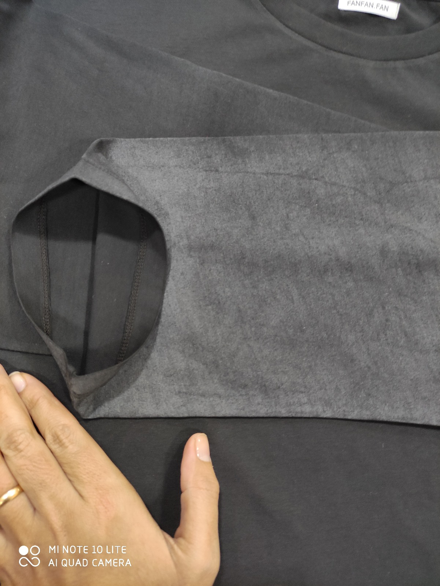
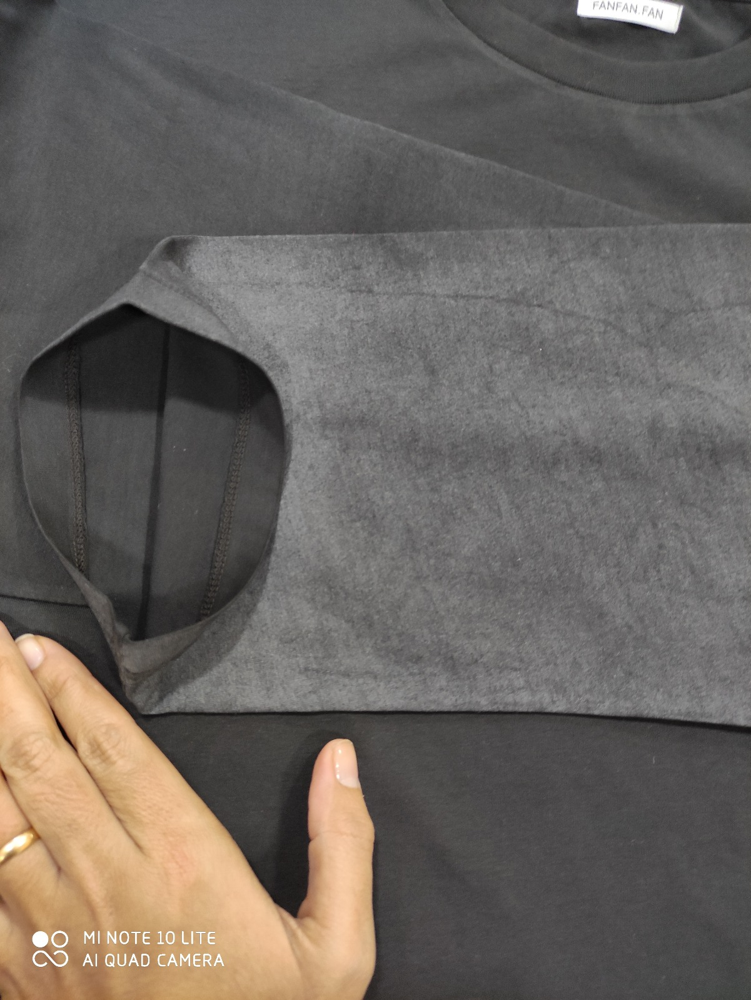
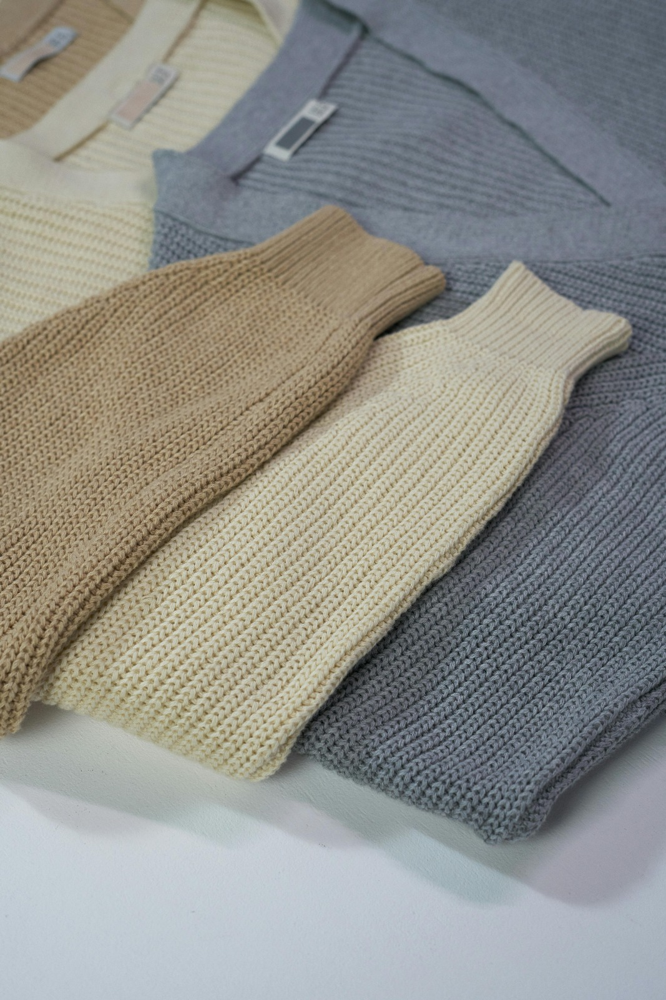
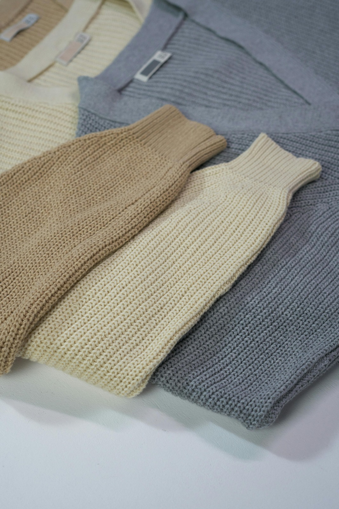
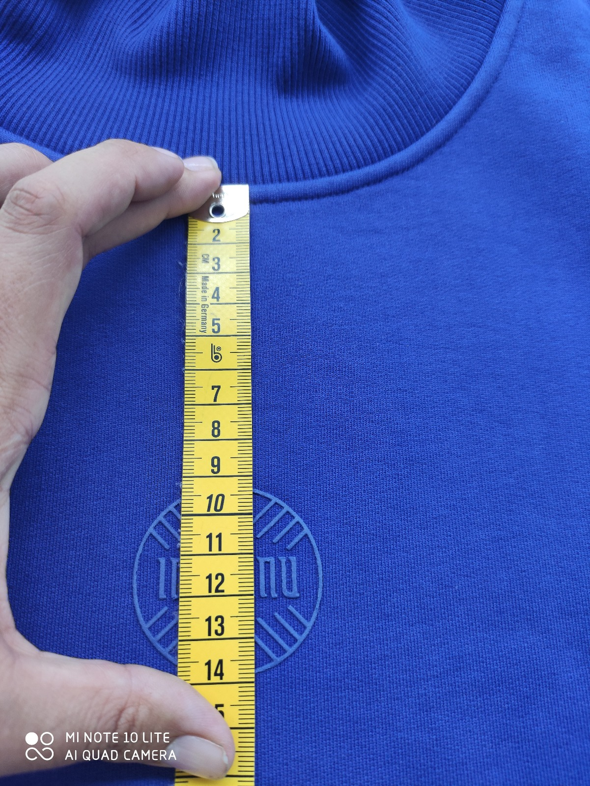
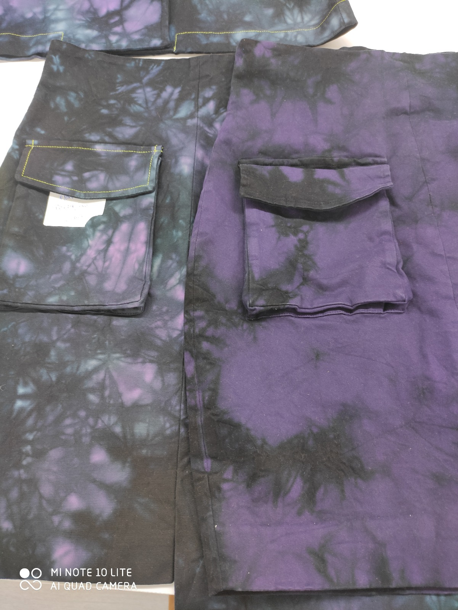
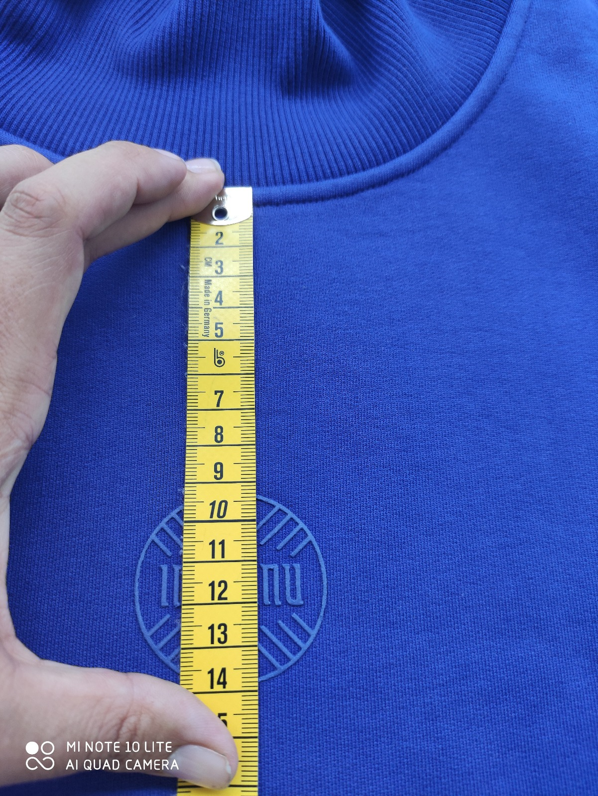
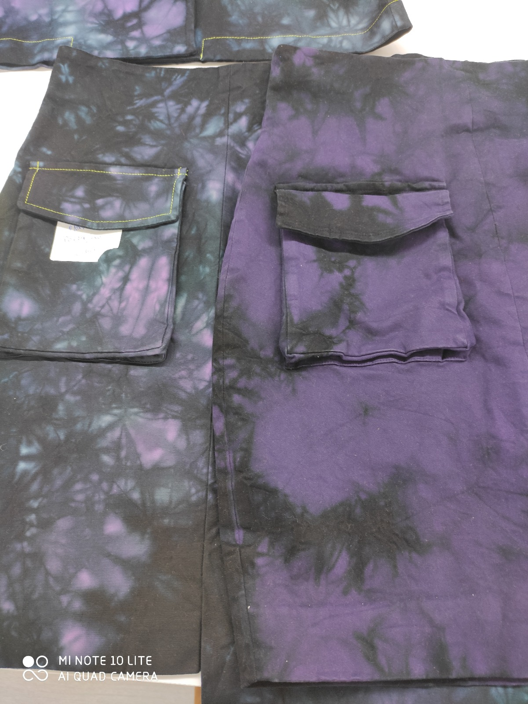

À Propos de Nous
Fancy Seam est une agencie textile concentrée sur la mise en relation entre client / usine ayant pour objectif de fournir un service externe de contrôle qualité.


En tant que commercial textile je suis me suis perfectionnée en acquérant et en approfondissant mês connaissances en termes de:
En plus de mês missions commerciales, mon rôle é tait également d’effectuer un crontrôle qualité avant l’expédition auprès du cliente, afin de m’assurer de la qualité de celle-ci
Nous considérons ce service trés important et oui, ce service de haute qualité à un cout effectivement. Mais le retour sur investissement sera três vite amorti car le cout de ce contrôle est bien moins élevé que lorsqu’un défaut de qualité est découvert alors que votre merchandise est déjà présent dans vos entrepôts, dans vos magasins ou chez le consommateur final. Sans compter l’impact sur l’image de marque…

 

 

 


